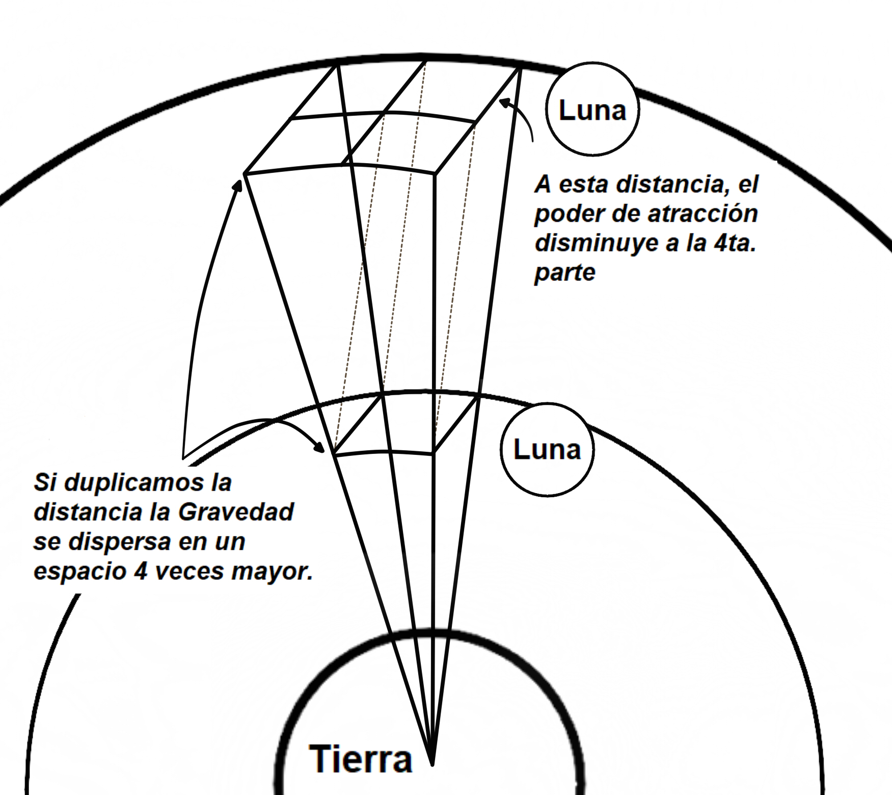

Titulo
( 1 )
¿NOS QUEDAREMOS SIN LUNA?
Se ha comentado en los medios que en varios millones de años la Luna saldrá de su órbita escapando
a la atracción de la Tierra, esta creencia se debe a su continuo alejamiento ( unos 3,8 cm. Por
año )
Esto no es así.
Todos los planetas mantienen sus satélites naturales en órbita, y es porque existe un equilibrio
entre ellos para que así suceda, de lo contrario habríamos visto ya estos astros vagando por el
espacio o chocando contra algún otro planeta.
Nuestro planeta no es la excepción, este equilibrio también existe entre la Tierra y la Luna, y
se mantiene gracias a las diferencias funcionales que existen entre la “Gravedad y la Fuerza Centrífuga ”.
Estas diferencias no solo son la influencia contraria que las mismas ejercen sobre la Luna, ya que
la gravedad ejerce una acción de acercamiento, mientras muy por el contrario la fuerza Centrífuga
influye en su alejamiento, además se podrá observar que si ubicamos la Luna a distintas distancias
del planeta, y hacemos una comparación, veremos que la influencia de ambos fenómenos varían su
magnitud uno respecto del otro.
En otras palabras, para que se entienda mejor, al alejarse la Luna, la influencia de la Gravedad
sobre ella disminuye por efecto de la distancia, pero la Fuerza Centrífuga disminuye en un porcentaje
mayor, siendo la Gravedad en este caso quien predomina sobre la Luna, provocando de esta manera que
su alejamiento sea limitado, para que así luego comience nuevamente a acercarse, una vez que esto
sucede la influencia de la Gravedad sobre la Luna aumentará por efecto de su acercamiento, y por la
misma razón la Fuerza Centrífuga aumentará pero en un porcentaje mayor, siendo esta fuerza en este
caso quien predomina sobre la Luna, provocando nuevamente el alejamiento de la misma.
Este es el comportamiento responsable de mantener un fuerte equilibrio,y mantiene la Luna en su órbita
y en su lugar dentro de ciertos límites.
Esta fué solo una explicación breve, para quien desee interiorizarse en el tema, paso a comentarles
esta teoría con más detalles.
Lo que se ha comprobado en la actualidad es que la Luna se encuentra en un periodo de alejamiento,
pero en el futuro alcanzará el límite donde comience su periodo de acercamiento, buscando siempre
dentro de su órbita el punto de equilibrio. Como ya lo he comentado, esto se debe a la influencia que
este par de fenómenos ( Gravedad y Fuerza Centrífuga ) ejercen sobre ella.
Comenzaremos por ver cómo funciona la…
( 2 )
GRAVEDAD
Sin entrar en detalles, podría decir que la Gravedad es el efecto de atracción que provoca la sola
presencia de materia, dependiendo su magnitud directamente de la masa del astro. Como ya lo he comentado,
este efecto disminuye de acuerdo aumente la distancia en una proporción 4 a 1, por ejemplo, si duplicamos
la distancia de la Luna respecto a la Tierra, la Gravedad disminuye su nivel de atracción sobre la misma
a la 4ta. parte, esto se debe al efecto de dispersión en un espacio 4 veces mayor que existe a esa
distancia con respecto a la distancia anterior, como se puede apreciar en la figura (1).
(((1)))
Si imaginamos una esfera a esa distancia alrededor de la Tierra, está tendría una superficie 4
veces mayor,de está manera la Gravedad se encuentra distribuida en esa superficie, siendo esta
la razón de disminuir su poder de atracción a la 4ta. parte con respecto a la distancia anterior.
A continuación de esta breve explicación, pasaremos a ver como funciona la…
( 3 )
FUERZA CENTRÍFUGA
La Luna se mantiene en órbita alrededor de la Tierra gracias al movimiento que le transfiere la rotación de la misma, y es la Gravedad quien además del efecto de atracción se encarga de transmitir el movimiento rotativo de la Tierra, provocando en este caso que la Luna se traslade en órbita alrededor de la misma, este movimiento genera a la vez una fuerza que intenta alejarla de la Tierra ( Fuerza Centrífuga ), hecho que no sucede debido a que es contrarrestada por el efecto de atracción que la gravedad ejerce sobre ella. Ahora bien, supongamos que este par de fenómenos ( Gravedad y Fuerza Centrífuga ) se mantuvieran en igualdad de condiciones siempre, nada evitaría que alguna fuerza exterior la acercara o la alejara de la Tierra, y así continuaría sin que nada pudiera evitarlo. Si así fuera, la Luna no tendría un equilibrio que pudiera mantenerla en su órbita. Pero por suerte esto no es así. Veamos la razón: Anteriormente comentamos que si alejamos la Luna al doble de distancia, la Gravedad disminuye su poder de atracción a la 4ta. Parte, tal como lo indica la fig. (1 ), debemos recordar además que, la Gravedad es quien transmite la Fuerza Centrífuga, por lo tanto, por la misma razón, esta disminuye su poder en la misma proporción que la Gravedad ( la 4ta. parte), como consecuencia, la velocidad de desplazamiento de la Luna también se vería afectada reduciéndose a la 4ta parte. Si esto fuera todo, como resultado obtendríamos la misma reducción en la Gravedad que en la Fuerza Centrífuga, y siendo así se encontrarían en igualdad de condiciones a cualquier distancia, de esta manera no sería posible proporcionar algún tipo de equilibrio. Pero esto no es todo, existe otro factor que gobierna la Fuerza Centrífuga. Como es bien sabido para que exista Fuerza Centrífuga debe existir cierta curvatura en la trayectoria de la Luna, ya que sin ella no tendríamos Fuerza Centrífuga, haciéndose MAYOR esta fuerza cuánto más cerrada sea la curvatura. Ahora recordemos que la Luna se encontraba al doble de distancia, por lo tanto, la curvatura de la órbita a esa distancia se encuentra el doble más abierta que a la distancia anterior ( fig. 2) provocando de esta manera otra reducción en la Fuerza Centrífuga de un 50 %, quedando así muy por debajo del nivel de la Gravedad, la cual nuevamente predominará sobre la Luna, siendo de esta manera inevitable que el astro comience otra vez su acercamiento al planeta Tierra.
Una vez que haya traspasado la zona de equilibrio y se haya acercado lo suficiente, todo este
proceso se revierte,ya que la curvatura de la órbita Lunar por efecto del acercamiento, se
encontrará más cerrada reforzando la fuerza Centrífuga lo suficiente para que sea esta en este
caso quien predomine sobre la Luna, obligando a esta nuevamente a alejarse tratando siempre de
encontrar su zona de equilibrio para mantenerse en su órbita.
Después de esta teoría, creo que tenemos la Luna bien sujeta, y solo por una catástrofe
astronómica podríamos perderla.
Cabe aclarar, y es importante saber que esta teoría es aplicable a todos los astros de los
sistemas orbitales.
( 4 )
ATEMOS UN CABO SUELTO
Hasta aquí, con la luna a una gran distancia todo marcha bien. ¿Pero qué sucedería con la Gravedad y la Fuerza Centrífuga al acercarnos a la tierra? Recordemos que al acercarnos cada vez más a la superficie del planeta, el creciente aumento de la Fuerza Centrífuga supera al de la gravedad, y si las condiciones se mantuvieran de ese modo no podríamos mantener los pies sobre el planeta, ya que predominaría la la Fuerza Centrífuga y nos expulsaría del mismo. Pero esto no es así, las condiciones en la superficie del planeta son muy diferentes. La razón es que estos dos fenómenos, a la distancia, en el espacio vacío, se comportan del modo que ya hemos visto, pero otro es el tema si hablamos del comportamiento de estos dos fenómenos sobre la superficie del planeta, tengamos en cuenta que nos encontramos sobre la “MATERIA”, esta es la gran diferencia, ya que esta es la condición necesaria para que la gravedad supere ampliamente a la Fuerza Centrífuga. Veamos cual es la razón: Sucede que desde el centro de la tierra hasta la superficie se produce la suma de la gravedad de cada uno de los átomos que la conforman, de esta manera se incrementará la gravedad cuanto mayor sea el tamaño del planeta. Diferente es el comportamiento de la Fuerza Centrífuga, ya que esta se mantiene invariable tanto en el centro como en la superficie del planeta. Para entender este comportamiento sería conveniente como ejemplo utilizar el gráfico de dos planetas con las siguientes características, uno debe tener el doble de diámetro que el otro, y además ambos tendrán una frecuencia de rotación idéntica.

Además tendremos un punto de referencia en la parte superior de cada uno de ellos.
Sabemos que el fenómeno de la Fuerza Centrífuga se debe a dos condiciones: una es el desplazamiento de
un objeto, y la otra es la curvatura de su recorrido, dependiendo su magnitud directamente de estas dos
condiciones.
Veamos entonces qué sucede con la Fuerza Centrífuga en estos planetas con una diferencia de tamaño tan
notable.
Teniendo en cuenta que la frecuencia de rotación es igual en ambos planetas podemos afirmar que, si el
punto de referencia del más pequeño tarda 1h. en llegar a completar un ciclo a una velocidad de 100km.h.,
significa esto que el más grande tardará lo mismo, pero el punto de referencia se desplazará en este
caso a 200km.h., ya que el recorrido que debe completar en el mismo tiempo, es el doble comparado a la
circunferencia del planeta más pequeño. La pregunta es: ¿Existe el doble de Fuerza Centrífuga en el mayor
por tener el doble de velocidad en su superficie?
La respuesta es “NO”.
Recordemos que la magnitud de la Fuerza Centrífuga depende no solo de la velocidad, sinó también de la
curvatura de su recorrido, si observamos detenidamente veremos que la curvatura de la superficie del
planeta mayor es un 50% menos pronunciada que la curvatura del menor.
Se puede afirmar que: el doble de velocidad x la mitad de la curvatura es equivalente a una fuerza
centrífuga del mismo nivel a la que tenemos en el planeta pequeño.
Significa esto que la magnitud de la fuerza centrífuga sobre la superficie de un astro, no depende de
su tamaño.
hemos podido ver que la fuerza centrífuga se mantiene en igualdad de condiciones para ambos planetas,
mientras que la gravedad va en un creciente aumento cuanto mayor sea el diámetro del mismo.
De esta manera creo haber explicado con suficiente claridad la razón por la que la gravedad
predomina sobre la superficie del planeta, y no así la fuerza centrífuga. Sabemos ya que la
rotación crea el efecto de fuerza centrífuga pero sería interesante además saber las causas
que provocan…
( 4 )
LA ROTACIÓN DE LOS ASTROS
Se ha observado en la Vía Láctea que todo gira,y existe una gran tendencia a que todo gire en el mismo
sentido, excepto la misma galaxia, y algunas otras excepciones.
Logicamente nos daremos cuenta lo que sucede si nos detenemos a observar algunos detalles simples.
Como ya sabemos es la gravedad la encargada de transmitir la fuerza centrífuga, en este caso provocada
por la rotación del nucleo de la galaxia, la cual le transfiere el movimiento de traslación a los astros
que la conforman, permitiendo de esta manera que se mantengan en órbita alrededor de la misma. Pero sucede
que no solo otorga el movimiento de traslación a los astros, además les provoca el movimiento rotativo, y
en sentido contrario al de la galaxia. Pasemos ahora a explicar cómo se produce este fenómeno.
Para entenderlo de una manera más simple, considero conveniente explicarlo con la ayuda de algunas
ilustraciones.
fig 1
Lo que podemos ver es que la gravedad se mantiene en movimiento junto con el núcleo de la galaxia,
porque es de este modo que transmite la fuerza centrífuga a todos sus astros, provocando su traslación,
pero además, si observamos bien la fig. (1) veremos que el movimiento rotativo de la gravedad predomina
más sobre la cara interna de los astros, osea la cara que se encuentra mirando hacia el núcleo de la
galaxia en ese momento.
Esta mayor influencia de la fuerza centrífuga sobre la cara interna de los astros, es sin lugar a dudas
la que le confiere el movimiento rotativo, y también es la responsable de la gran tendencia a que todo
gire en el mismo sentido e inverso al de la galaxia, como puede apreciarse en la figura (1), por
supuesto que existen algunas excepciones. Un experimento con elementos simples nos puede ayudar a
entender el funcionamiento de este fenómeno, lo vemos en la fig. (2)
Se trata de un rodillo aletado (A) que ocuparía el lugar del núcleo de la galaxia, y otro
rodillo más pequeño (B) también aletado que representa una estrella o planeta.
fig 2
El rodillo (A) se encuentra en rotación, y a través del aire le transfiere dos movimientos al
rodillo (B), uno es de traslación, y el otro es el de rotación, además como se puede apreciar en la
fig. (2), el sentido de rotación es inverso al del rodillo (A) (o núcleo de la galaxia).
Además de esto, seguramente alguien se preguntará ¿a qué se debe las distintas frecuencias de rotación
de, por ejemplo, los planetas del sistema solar?. Sin lugar a dudas, una de las razones es la influencia
de la fuerza centrífuga del sol sobre todos los planetas del sistema. Veamos porqué sucede esto:
recordemos que el sol gira en sentido contrario al de la galaxia del mismo modo que lo hacen los
planetas, siendo de esta manera que su fuerza centrífuga influye en sentido contrario al de la
rotación de los planetas, ya que por ser inversa a la fuerza centrífuga de la galaxia, ejerce un freno
en la rotación de los mismos, influyendo más aún cuanto más cercano al sol esté el planeta, haciendo
así más lenta su rotación.
fig 3
Como podemos ver en la fig (3), la fuerza centrífuga de la galaxia le da el mismo sentido de giro al Sol
y al planeta, pero el Sol ejerce una fuerza centrífuga contraria sobre el planeta ralentizando así su
rotación.
Otra razón muy conocida que ralentizar la rotación de los planetas es la presencia de satélites
naturales en órbita alrededor (la Luna sería en nuestro caso). Además de su cercanía, cantidad y tamaño.
( 5 )
UNA CURIOSIDAD…
No puedo dejar sin mencionar que todas estas teorías desde la (1) hasta la (5) estarían dando una explicación a los fenómenos que actualmente están sucediendo en nuestro planeta, además de explicar también los que ya sucedieron en la antigüedad. Como lo hemos visto en el punto (1), esta teoría aplica para todas las órbitas de los astros, y no solamente para la Luna. Teniendo en cuenta que la Tierra al igual que la Luna mantienen en su órbita períodos de acercamiento y otros de alejamiento al Sol, nos podemos dar cuenta que es muy probable que nuestro planeta este atravesando en este momento por una de sus etapas de acercamiento al Sol, ya que esto coincide con los fenómenos que actualmente están sucediendo. Estos fenómenos serían los siguientes: 1. El calentamiento global: Del mismo modo que existen las eras glaciales, donde segun esta teoria sucede en cada una de las etapas en que el planeta se aleja del Sol, también existen las eras de calentamiento global, este fenómeno que actualmente está sucediendo y otros que seguidamente paso a comentar, por obvias razones estarían indicando que en la actualidad la tierra está atravesando por una de sus etapas de acercamiento al sol. Pasemos ahora a ver el segundo fenómeno. La rotación del planeta se está ralentizando: actualmente se ha comprobado un lento pero progresivo frenado en la rotación de la tierra, haciendo que nuestros días duren cada vez más tiempo, veamos porqué sucede esto. Como ya lo hemos visto la fuerza centrífuga del sol es contraria a la rotación de la tierra, incrementándose progresivamente dicha fuerza a medida que se acorta la distancia entre el sol y la tierra, provocando de esta manera un lento frenado en su rotación a medida que el planeta siga acercándose al Sol. y veamos ahora un tercer fenómeno que debería estar sucediendo. La traslación del planeta se está acelerando: debo aclarar que a pesar de no tener ninguna información al respecto según lo que explica esta teoría, debería estar sucediendo una progresiva aceleración en la órbita de nuestro planeta, haciendo que los años duren cada vez menos tiempo. Esto también se debe al incremento de la fuerza centrífuga del Sol debido a nuestro continuo acercamiento, que además de provocar un aceleramiento en la traslación del planeta, dicho acercamiento reduce el tamaño de la elipse de la órbita, provocando que este anualmente deba recorrer una distancia cada vez menor, siendo esta otra razón que provoca que los años duren cada vez menos tiempo. Es necesario hacer otra aclaración. De acuerdo a la teoría, la velocidad de la traslación del planeta y la de su rotación no puede ser la misma durante todo el año. Veamos por qué sucede esto: según se ha informado la órbita terrestre tiene forma de elipse,donde el sol no estaría necesariamente ubicado en el centro, sino que estaría ocupando un lugar más cercano a uno de los extremos de la elipse. Para entender mejor lo que aquí está sucediendo considero conveniente explicarlo con la ayuda de la siguiente figura.
De acuerdo con lo ya explicado la traslación de la tierra pierde velocidad al mismo tiempo que su
rotación se va acelerando a medida que ésta recorra en su órbita la zona más lejana al sol, sucediendo
exactamente lo contrario cuando se encuentra recorriendo la zona más cercana al sol. Recordemos que
debido a su acercamiento se ve incrementada la fuerza centrífuga provocando esto un aceleramiento en la
traslación y al mismo tiempo una disminución en la rotación del planeta.
Hecha ya esta aclaración doy por terminada la explicación de esta teoría, que aunque sea básica servirá
para comprender a qué se deben algunos de los movimientos más notorios de los sistemas orbitales.
Una vez comprendido esto, podemos avanzar un poco más sobre el tema de la gravedad. En el capítulo 2,
cuando explique el fenómeno de la gravedad, comencé diciendo. “sin entrar en detalles”, esto fue para no
extenderme demasiado en la explicación, ya que en ese momento nos interesaba más su comportamiento, y no
por que existe, o…
( 6 )
¿QUÉ ES LA GRAVEDAD?
¿Y QUÉ ES LA MATERIA?
En este capítulo trataremos de darle luz a esta incógnita, ya que saber que genera su existencia nos ayudará a comprender aún más el efecto que provoca en el Espacio Tiempo. Descubriremos también que la materia es la otra cara de la moneda, ya que no puede existir una sin la otra. Sabemos sobradamente que la gravedad es el efecto de atracción que ejerce un cuerpo sobre otro, también sabemos que este fenómeno no es una fuerza,sino un efecto provocado por la curvatura en el espaciotiempo ocasionada por la sola presencia de materia. Vimos también muchas explicaciones intentando demostrar de alguna forma de que manera la materia de un astro curva el espaciotiempo. La figura que normalmente podemos encontrar en los intentos por demostrar de qué manera la materia provoca esta curvatura en el espaciotiempo es la siguiente…
(1)
Ante todo debo aclarar que no es la gravedad la que provoca esta curvatura, debemos entender que la gravedad y la curvatura son una misma cosa, en todo caso podríamos decir que la curvatura en el espaciotiempo provoca el fenómeno de la gravedad. Lo que aquí estamos viendo es una representación del espaciotiempo en un plano cuadriculado en tan solo dos dimensiones (esto no esta mal, ya que de esta manera se puede apreciar y entender mejor lo que aquí sucede), pero además tenemos un astro que pareciera haber sido agregado (como si no perteneciera al espaciotiempo) curvando al mismo de una manera que en tres dimensiones no podría suceder. La razón es la siguiente: si el astro fuera agregado, en un espaciotiempo de tres dimensiones, en lugar de provocar un estiramiento, provocaria una compresión a su alrededor, que gráficamente se vería de esta manera.
(2)
Por supuesto que si esto fuera así el fenómeno sería contrario al de la gravedad. Muy diferentes es lo que en la naturaleza realmente sucede, teniendo en cuenta que el astro forma parte del espacio tiempo y el fenómeno que provoca se vería de esta otra manera.
(3)
En esta figura podemos apreciar al espaciotiempo penetrando en el astro y para ello debe también
comprimirse dentro de la materia, y de esta manera provocaría el ya mencionado estiramiento o depresión
por fuera del mismo, esta depresión es la que crea el fenómeno de atracción y que conocemos con el
nombre de gravedad. Es aquí donde se observan las dos caras de la misma moneda antes mencionadas, ya que
como es obvio no puede existir una depresión de espacio tiempo si a su vez no existiera una comprensión
del mismo. Ahora bien… ningún fenómeno sucede porque sí, por lo tanto hagamos esta pregunta ¿cual es el
motivo que provoca que el espacio tiempo se comprima en el interior de la materia? y otra pregunta
seria. ¿para qué sucede esto?. Para comprender mejor la razón de este fenómeno, no estaría demás repasar
básicamente como se compone…
( 7 )
LA MATERIA
Si la comenzamos a dividir nos encontraríamos en primer lugar con los primeros ladrillos que conforman
la materia, las Moléculas, a la vez que estas están formadas, por partículas más pequeñas, los átomos,
y si continuamos nos encontraremos con otras partículas que lo conforman, Neutrones, Protones, etc., y
si sucesivamente seguimos dividiendo nos encontraríamos con partículas más pequeñas hasta llegar a la
partícula que ya no se puede dividir, porque su interior no esta conformado por partículas, estaríamos
en presencia de…
( 8 )
LA PARTÍCULA ELEMENTAL
Y es aquí donde nos hacemos la siguiente pregunta, y si no está formada por partículas, ¿que hay en su
interior ? . ¿De qué está hecha? al fin se revela la incógnita, pues ya teniendo suficientes datos nos
damos cuenta que el espacio tiempo se encuentra en el interior de estas partículas , y se puede afirmar
que toda partícula es una esfera de espacio tiempo comprimido.
Seguramente se preguntarán ¿qué puede generar suficiente energía para crearlas? Desconozco cuánta
energía se necesita para comprimir el espacio tiempo hasta ese nivel, pero es seguro que en las
estrellas existe suficiente energía para crearlas. Otra pregunta sería, ¿y por qué estas partículas
permanecen en ese estado?¿que impide que vuelvan a expandirse? La tendencia nos lleva a pensar que
deberían volver a su estado original, pero recordemos que existen dos caras de la misma moneda, y que
no puede haber compresión de espacio tiempo sin que a su vez se forme una depresión del mismo, y que
lógicamente esta depresión rodea por completo la esfera comprimida, además como ya sabemos, esta depresión
o estiramiento provoca el efecto de gravedad, y es este el fenómeno que impide que la esfera pueda
expandirse nuevamente para volver a su estado original de espacio tiempo.
Tengamos en cuenta que el Universo dispone solo de espacio tiempo, y a partir del mismo surgió todo lo que
en él existe. Debemos comprender que “absolutamente todo” lo que existe está formado por espacio tiempo
incluso este tipo de energía tan necesaria para la vida, como ya se habrán dado cuenta, estoy haciendo
referencia a…
( 9 )
LA LUZ
hablemos ahora de esta energía que trajo de cabeza a muchos investigadores.
Antes de darle un poco de claridad a esta incógnita, sería conveniente comentar que los métodos teóricos
son los que permiten revelar las “causas” relacionadas con algún fenómeno donde dichos procesos que lo
generan no pueden ser observados o percibidos directamente por nuestros sentidos, como lo es en este caso.
Por este motivo no estaría mal analizar algunas razones por las cuales nunca funcionaron las distintas
teorías que se desarrollaron para intentar explicar de que está compuesta, y cómo funciona ese tipo de
energía.
Actualmente existen dos teorías, con las cuales se intenta dilucidar esta incógnita. El verdadero problema
radica en algunos cabos sueltos que ambas teorías contienen.
Estos cabos sueltos son puntos de la teoría a los cuales no se puede dar una explicación lógica, o que se
contradicen con algún punto anteriormente mencionado en la misma teoría.
Pasemos a analizar la primera de estas teorías…
( 10 )
LA TEORÍA CORPUSCULAR "EL FOTON"
Esta teoría nos estaría indicando que la Luz está compuesta por corpúsculos de energía “sin masa”, (El Fotón).
Estos fotones viajan a través del espacio, siendo capaces de de vibrar cada uno de ellos en distintas
frecuencias, las cuales corresponden a toda la gama de frecuencias del espectro de la luz.
Pasemos ahora a comentar de que se tratan los cabos sueltos de esta teoría. Para comenzar podemos afirmar
que no existe en la naturaleza algún fenómeno que permita la existencia de una “partícula” concentrada de
energía “sin masa”, (El Fotón).
Si aplicamos el sentido común nos daremos cuenta que si se formaran estos corpúsculos, inmediatamente se
expandirán en todas direcciones, esto simplemente se debe a la inexistencia de una fuerza o efecto,
interno o externo, que permita su permanencia en ese estado.
Otro de sus cabos sueltos sería su vibración. No existe ninguna razón por la que los Fotones deban vibrar
en distintas frecuencias, por otro lado, tampoco existe alguna explicación que nos indique alguna razón
que provoque sus vibraciones, para que esto suceda debería existir algún fenómeno que las provoque .
¡No pueden vibrar porque sí!
Pasamos ahora a ver la segunda teoría a la que mencionan como…
( 11 )
TEORÍA ONDULATORIA "ELECTROMAGNÉTICA"
Veamos qué nos dice esta teoría que es la más aceptada hasta el momento. Según su explicación nos vemos
enfrentados a una onda con características muy especiales, esto se debe a su conformación diferente a
todos los sistemas de transmisión ondulatoria conocidos, ya que la misma sería la “única en la naturaleza”
que además de no estar formada por el medio que la conduce, estaría compuesta por dos tipos de energía,
razón por la cual se dice que estamos ante una onda dual.
Veamos ahora cómo funciona este tipo de onda.
La explicación indica que ante una manifestación de energía,como podría ser, el sol, la lámpara, o
cualquier otra fuente, se estarían provocando corrientes eléctricas, y estas a su vez generan ondas
magnéticas (siendo estos los tipos de energía que la componen) por lo cual estas volverían a generar ondas
eléctricas, y así continuará creando una sucesión de ondas que se propagan a través del espacio.
Intentaré representar en esta figura, de qué forma supuestamente se comporta este tipo de onda.
Pero sucede que en esta teoría nos encontramos con dos cabos sueltos. El primero bien conocido, y es que
no se ha encontrado una explicación concreta de cómo puede este tipo de ondas trasladarse a través del
espacio vacío.
Veamos cual es la razón: Para que este tipo de onda pueda trasladarse sería necesario que el el espacio no
esté necesariamente vacío, y contenga algún tipo de materia en estado gaseoso, esto se debe a la imposibilidad
de generar una onda eléctrica sin la existencia de los átomos de este gas, ya que son necesarios los electrones
que estos contienen para la creación de la parte eléctrica de esta onda. es bien conocido que sin electrones
no es posible generar una onda eléctrica.
Debido a este inconveniente en algún momento se pensó en la posibilidad de la existencia de algún tipo de
gas en todo el Universo, (del que mucho se ha hablado), al cual se lo mencionaba con el nombre de “Éter”,
y sería este el medio ideal por donde este tipo de ondas pudiera desplazarse.
Debido a que no existe algún medio por el cual se lo pudiera detectar, se pensó que este supuesto gas era
inerte a todo “excepto a la Luz”, y sería esta la solución a este gran problema. Pero después de realizar
diversas pruebas y estudios, se comprobó la inexistencia del mismo.
Razón por lo cual, si la luz estuviera conformada por ondas electromagnéticas, “no podría viajar a través
del espacio vacío”.
CONTINUARA...